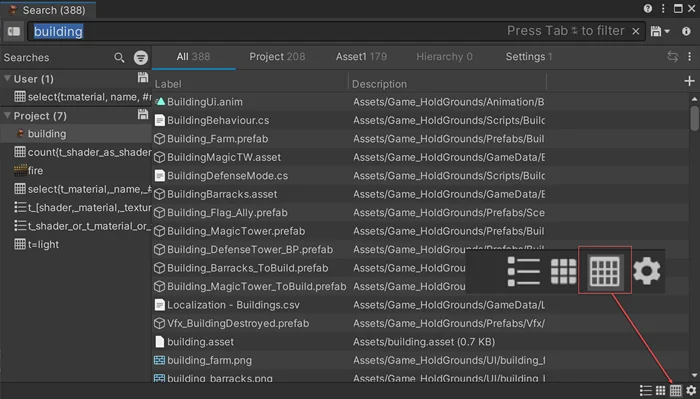

Use the Search window’s table layout to work with assets and other search results as rows in a spreadsheet-style view. This customizable view allows you to compare assets, edit them individually or as groups, and export their information for reports.
To open the Search window and select views, refer to Launch and use the Search window.
Use these techniques to build a table with the information you want to manage:

Click a column header to sort by that column. Click again to change between ascending and descending order.
To add a property or selector as a new column:
To change how a column behaves or appears:
| Field | Description |
|---|---|
| Format | Determine how to interpret values. For example, select Serialized Property, Material Property to display editable values. If the format doesn’t match the data, the table can’t display results in that column. |
| Icon | Select an icon to show in the column header. |
| Name | Enter a column title. |
| Alignment | Select the horizontal alignment of the column header and cell content. |
| Sortable | Determine whether you can sort the column. |
| Path | The value’s property path for debugging what the search query is returning as a result. |
| Selector | Selector string used with the query, for example to match properties in searches. |
To manage columns:
To restore the default table layout, select the reset control next to Add column.
To save a layout, save your search query. Saved searches store the current query and the table configuration. For more information, refer to Manage search queries.
To edit asset information in the table:
Note: Editing in the table doesn’t run custom Inspector drawing or property workflows. Dependencies, validation, or side effects that live in custom editors might not run. For complex or safety-critical edits, use the Inspector.
To make cells editable, set the column Format to an editable format. The formats Serialized Property and Material Property are always editable; other formats might also be editable in your project.
Tip: If the value for an individual entry can’t be edited despite being an editable format, the value’s field is grayed out.
The table displays values by their type. To learn how to edit each type, refer to Manage components and their values.
To edit a value across multiple entries:
To export the current results as a table: